C.O.R.E. - Game Developer's Toolkit — is a comprehensive set of tools designed to simplify the game development process. This asset provides developers with all the necessary components to quickly and efficiently create games, regardless of their experience level.
Don't forget to leave feedback with wishes or suggestions! Your feedback greatly helps in promoting the asset, and this in turn affects the development. ◝(ᵔᵕᵔ)◜


With C.O.R.E. you will get:
- Wide range of tools: everything you need to create games, from resource management to a system for saving and loading scenes.
- Support for beginners: intuitive interfaces and documentation will help you quickly master all the tools.
- Professional approach: developed taking into account the best practices of the industry to ensure high quality and performance.
- Documentation
Don't miss out on the opportunity to simplify your project work! Get C.O.R.E. today and start creating your games with ease!
So C.O.R.E. - Game Developer's Toolkit offers developers a powerful set of tools that simplifies game creation and increases development efficiency. This asset includes all the necessary components so that you can focus on the creative process, not on routine tasks.
- C – Creation (Tools for quickly creating game objects and levels)
- O – Organization (Simplifying the organization of files and resources in a project)
- R – Rapid Development (Features that speed up the game development process)
- E – Extensibility (Support for mods and the ability to add new features)
Aspects
- Resource Manager A convenient tool for managing all the resources of your project. Allows you to easily add, remove and organize textures, models, audio files and other resources.
- Mods Support Integrating mod support allows players to expand your game with new features and content, increasing its replayability and appeal.
- Config System Flexible configuration system for storing game settings and parameters. Allows you to easily change settings without having to edit code.
- Code Generator A utility for automatic code generation that speeds up the development process and minimizes errors.
- Model This is a single system that stores data about the player and other objects.
- Save System A reliable system for saving player progress with the ability to create backups and restore data.
- Scene Loader An efficient scene loader that optimizes transitions between levels and minimizes loading time.
- Visual View Model A visual interface for working with view models (View Models), which simplifies the setup and management of objects in the game.
- Color Library A color library with preset palettes and the ability to create custom color schemes for your project.
- Mouse Manager Convenient mouse control with support for various events and interactions to improve the gameplay.
- Global Updater A global update system that allows you to manage updates to the game state and objects in real time.
- Time Manager A utility for managing time in the game, including pauses, timers, and other time mechanics.
- Input System A flexible input system that supports various input devices (keyboard, mouse) with the ability to customize.
- Audio System A fully functional audio system for managing sound effects and music in the game with the ability to customize volume and effects. In the future, we plan to switch to FMod.
- Game Settings A user-friendly interface for customizing game parameters, allowing players to change the settings to suit their preferences.
- Custom UI Elements A set of custom interface elements (UI) that can be easily integrated into your project to improve the user experience.
- Third Party Assets Support for third-party assets to expand the functionality of your project without having to write code from scratch.
- Utils Useful utilities and functions to simplify development and improve project performance.
- Localization Full-featured support for localization of text, images, etc. Loading localization keys from configs and using them in the game.
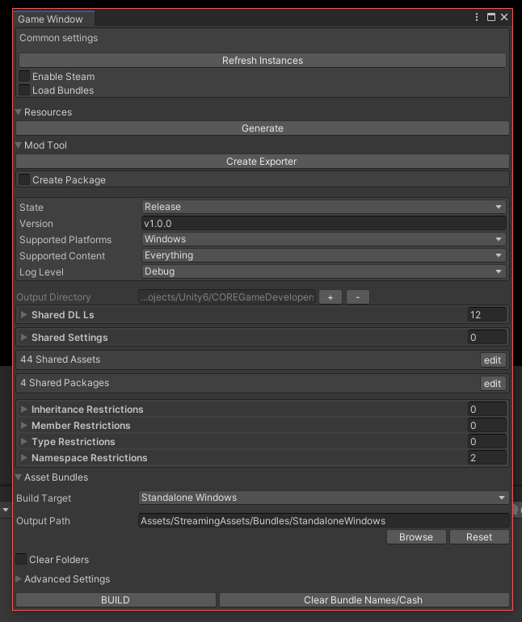
Resource Manager
Resource Manager is a powerful tool that provides convenient loading and unloading of prefabs, scenes, images and other resources of your project. It supports working with Asset Bundles and Streaming Assets folder, which allows you to effectively manage resources in the game. With Resource Manager, you get fast and convenient access to project files through code, which greatly simplifies the development process. This tool tightly integrates with Code Generator and Mods Support, allowing developers to easily add new features and content to their games. The main functions of Resource Manager include:
- Loading and unloading of various types of resources (prefabs, scenes, images, etc.).
- Support for Asset Bundles for effective resource management.
- Working with Streaming Assets folder to store and load data available at runtime.
- Convenient access to resources through code for quick interaction.
- Integration with Code Generator and Mods Support for extensibility of functionality.
As already mentioned, Resource Manager is used to load and unload assets in the project. Loading and unloading is very easy:
Let's figure out which fields are responsible for what:
Resource Datas - All internal resources that do not follow the general rules of code generation, such as Localization keys, which must be consistent throughout the entire project. In essence, Resource Datas generates enumerations for each of the lists. To add your resource to the list, you must first write a rule by which the enumerations will be generated.
- Type - resource type (string) or its name, must be unique
- Paths - paths where the resources are located
Bundle Datas - a list of all bundles in the game that will be collected. There is no need to manually set the bundle to which each asset belongs. All assets that are inside the folder will be automatically included in the bundle!
- Name - the name of the bundle, must be unique
- Variant - the variant of the bundle, must be unique in the bundle
- Paths - the paths where the resources are located. It is enough to specify the root folder with the resources
Asset Datas - resources for which enumerations and data for accessing them via Asset Bundles should be generated
- Name - unique resource name
- Bundle - bundle to which the resource belongs
- Paths - paths where resources are located
- Name Regex - Works in conjunction with Enum Values, at the moment you can specify maximum 3 Regex values. Leave the field blank if you want the resource name to be taken in full. For example, you have resources with the names UI_Player_Bob.png, UI_Player_Tom.png, UI_Enemy_Bill.png and you want to divide them into groups and names, for this you need to write Regex, which will take the necessary strings from the name, in this case Regex will look like this "Name_(.+?)_(.+?)$". This means that we will take Player and Enemy from the name and create an enumeration with the name Group, then we will take Bob, Tom, Bill from the name and create an enumeration with the name Name. The example below shows that we take two parameters from the name and create enumerations from them. All the rules for constructing enumerations are specified in the Enum Values fields, where each list element corresponds to one Regex value.
For a more in-depth understanding, please check out Example.
- Type - resource type. For example, localization keys or sprites.
- Directory Save Path - path to generate resources. Leave the field empty if you want the resources to be generated in a common folder
- Enum Values - rules for constructing enumerations. It is important to remember that the Enum field has priority - if you specify both Name and Enum fields, then the Enum field will ultimately be taken as a more valid rule.
- Name - any enumeration name, may not be unique, for example, size, value, name, etc.
- Enum - any existing enumeration. for example, UnityEngine.KeyCode. It is important to specify the full path to this enumeration, with all Namespaces
- To Upper - indicates that the enumeration should be written in uppercase Assets/COREToolkit/Scripts/Shared/Generated
Example of use:
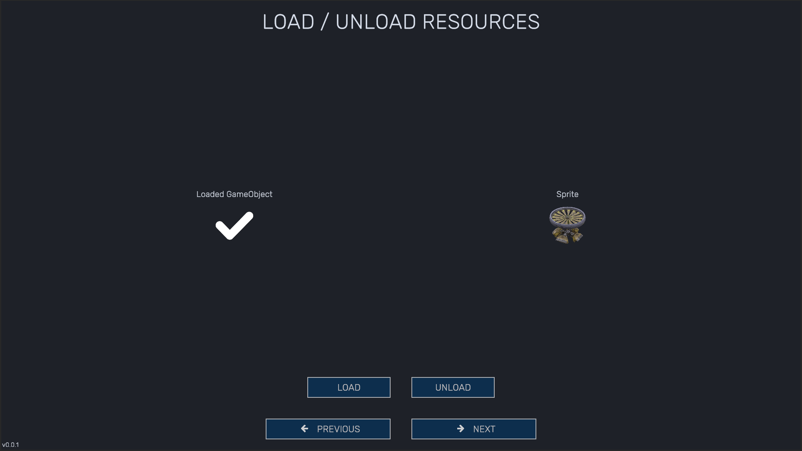
ResourceComponent visualRC = ResourcesPlayerGenerated.LoadGameObjectExamples(new EnumData<ResourcesPlayerGenerated.ExamplesGameObjects>(ResourcesPlayerGenerated.ExamplesGameObjects.UI_ExampleGameObject, null), RootSpawnGameObject);
ResourcesPlayerGenerated.UnloadSpriteExamples(ResourcesPlayerGenerated.ExamplesSprites.UI_ExampleIcon_0);
Before you start working with resources:
- In the Resources folder, create Create/CORE/PlayerResources
- Study Example - see the following sections for how to install the example
- Warning
- All custom resources must be stored in PlayerResources!
If you do not plan to update to the latest version of C.O.R.E. then there is no need to use PlayerResources. These resources were created for one purpose only - to separate the tool and user (i.e. developer) resources to be independent of each other. This rule does not apply to ColorLibrary since C.O.R.E. is slightly dependent on them.
All bundles are built using the resources that you specified in the PlayerResources settings.
- Warning
- Bundle names must be unique, just like resource names!
Mods Support
Mods Support is a powerful tool that simplifies the process of generating and packaging mods for your game. It allows developers or users to easily create and integrate custom modifications, which greatly expands the possibilities of the gameplay and increases replayability. The main features of Mods Support include:
- Convenient mod generation: The tool allows you to quickly create and pack mods, which can then be easily integrated into the game.
- Project assembly: Based on the use of Assembly Definition and Asset Bundles, which ensures reliable and efficient operation of mods.
- Export window for modders: A special interface for exporting mods that simplifies the process of creating and managing custom content.
- Setting code restrictions: The ability to set restrictions for code, which allows you to control the functionality of mods and prevent possible conflicts.
- Additional materials: Developers can supply additional materials along with the tool, which makes the integration process more convenient.
- Starting point for mods: The tool provides a single place to start and stop all mods, making them easier to manage.
- Change tracking: The system tracks the addition and removal of mods from the Mods folder, ensuring that the content in the game is up to date.
- Compatibility with the engine version: All mods must match the engine version used in the game, which guarantees stability and performance.
With Mods Support, you can easily extend the functionality of your game and give players the ability to create and share their own modifications. ModTool was taken as a basis and completely redesigned for its own needs.
Working with mods comes down to a few rules:
- You need the CORE Mod tool
- You need Documentation of your project
To create your own mod you only need to study the API of the project, create a mod, and then export and add it to the game. Everything else will be done for you C.O.R.E..
Mod Examples
For modders, you must provide all the tools they need to develop and integrate their add-ons into your product. For easy customization and export of the mod, C.O.R.E. provides a powerful tool for assembling custom mods. To do this, modders just need to open the mod export window Tools/ModTool/Export Mod and fill in all the fields.
To start learning the tool, you need to do the following:
- Create a new empty Unity project of the same version and with the same settings as your main application
- Export the modding tool to your mod project
- Download CORE Game Developers Toolkit Mod Examples.unitypackage
- Using Unity/Assets/Import Packages/Custom Package unzip it into the project
- Install the com.unity.nuget.newtonsoft-json plugin via the Package Manager window
- In the Assets/Resources folder, you will find two text files, these are the mod preset settings. Move these two files to the ../ProjectName/Library/ folder
- Open the Mod Exporter window and make sure that all the settings are applied correctly. Otherwise, click the Load button to try to load the settings
- Click the Prepare button in the Mod Exporter window to set up resources such as color palette, etc.
- Warning
- ⚠️ Important! You will not be able to test your mods outside of your project. In order to test them, you must first export them and add them to the mods folder.
Mod Tool Exporter
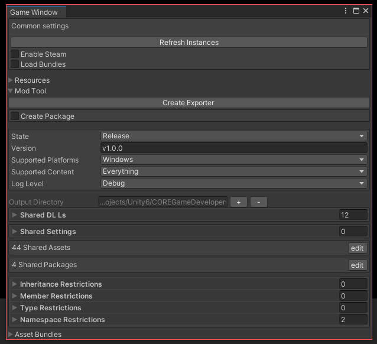
Common Settings
- Refresh Instances - recreates all ScriptableObjectSingletones
- Enable Steam - initializes Steam before launching the game. To initialize Steam, you must have SteamAppId. In the root of the project, create a text file named steam_appid.txt and add your application id in Steam to it.
- Warning
- ⚠️ Important! To successfully initialize the application, Steam must be enabled!
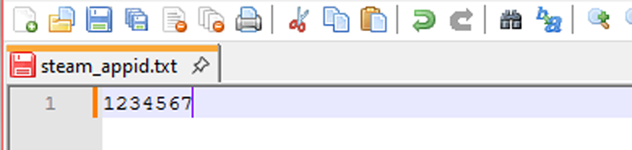
- Load Bundles - CORE Game Developers Toolkit Mod Examples.unitypackage will attempt to load resources from bundles. To use this option, you must first build the bundles.
Resources
- Generate - resource file generation. Usage example: you added a new localization key and in order to be able to use it through the CORE Game Developers Toolkit Mod Examples.unitypackage tools, you first need to generate resources so that this localization key is added to the list. After that, you can select it from the drop-down menu. The same applies to bundle resources, so that the tool can find them, you need to generate resources, they will be added to the list and then the tool will be able to use them.
Mod Tool
- State - development state. If you are actively developing the application, leave this option at Debug so that the tool is not exported with each application build.
- Version - current version of the tool
- Supported Platforms - all supported platforms
- Supported Content - all supported content for mods. Example: if you remove scene support, modders will not be able to add new scenes
- Log Level - mod logging level
- Shared DLLs - libraries that will be supplied with the tool. All libraries are located at ProjectName/Library/ScriptAssemblies/
- Shared Settings - additional settings that will be supplied with the tool
- Shared Assets - additional resources that will be supplied with the tool
- Shared Packages - additional plugins that will be supplied with the tool
- Output Directory - directory where the tool will be exported
- Inheritance Restrictions - restrictions related to inheritance of Types inside Mod Assemblies
- Member Restrictions - restrictions related to the use of fields, properties and methods from other types
- Type Restrictions - restrictions related to the use of entire namespaces
- Namespace Restrictions - restrictions related to the use of Types for fields and properties
Asset Bundles
- Buld Target - the platform for which the bundles are built
- Output Path - the directory where the built bundles will be placed
- Clear Folder - will wipe out all contents of build directory as well as StreamingAssets/AssetBundles if you are choosing to copy build there
- Build - build bundles
- Clear Bundle Names/Cash - deletes all bundle names in the project and clears the cache of bundles
Exporting the CoreModTool tool for modders:
- In your main project, open the game window (it is located at Windows/CORE/Game Window) and find the Mod Tool section, then click the Create Exporter button.
- After exporting the tool, a folder with the exported tool will open, you need to copy the entire CoreModTool folder to the mod project and place it inside the Assets folder
- After compiling all the assemblies, the errors should go away (if there were any)
After you export the mod tool you will get errors in the console - ignore them!
How to create your own mod
In order to create your own mod you need:
- Export the CoreModTool tool to an empty Unity project.
- After exporting the tool, open the Tools/ModTool/Export Mod window
- Enter the mod name
- Click the Prepare button and 2 files Boot.cs and **{ModName}_AD.asmdef** will be generated in your project
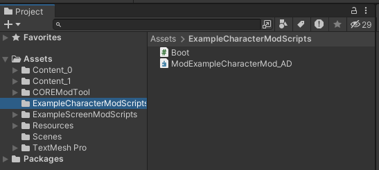
The structure of the Boot.cs file is:
using UnityEngine;
namespace ModExampleTestMod
{
{
private static Boot _instance;
[ModOnLoaded]
public static void ModOnLoaded(
Mod mod)
{
if (mod == null)
{
Debug.Log($"The mod [{mod.Name}] has not been loaded!");
return;
}
_instance = Create<Boot>(mod);
Debug.Log($"The mod [{mod.Name}] has been loaded!");
}
[ModOnUnloaded]
public static void ModOnUnloaded(Mod mod)
{
if (mod == null)
{
Debug.Log($
"The mod [{mod.Name}] has not been unloaded correctly!");
return;
}
if (_instance != null && _instance.gameObject != null)
GameObject.Destroy(_instance.gameObject);
_instance = null;
Debug.Log($
"The mod [{mod.Name}] has been unloaded!");
}
}
}
After that you can export your mod and add it to the Mods folder of your project for testing. Read more about the mod export window in the corresponding section.
Folder:
Game/
└── Mods/
└── MyFirstMod/
├── Resources/
│ └── Content // Mod content (icons, images)
├── Windows // Asset Bundles
└── MyFirstMod.json // Settings
└── MyFirstMod_AD.dll // Mod logic
Manifest
{
"IsEnabled": false,
"Data": {
"Name": { ... },
"Author": { ... },
"Description": { ... },
"Version": "v0.0.1",
"Platforms": 1,
"Content": 30,
"RequiredReboot": false,
"LoadOrder": 0,
"OutputDirectory": "...Game/Mods",
"Assets": { ... },
"ScriptsDirectory": ".../GameProject/Assets/MyFirstMod",
"Images": { },
"IconPath": "Content/MyFirstMod.png",
"UnityVersion": "2022.3.7f1"
}
}
Mod Settings
Info
- Version - current version of the mod
- Author - the author of the mod in one or more languages
- Description - in one or more languages
Settings
- Platforms - platforms for which the mod is available (currently only Windows is available)
- Content - the contents of the mod. It doesn't matter if you specified all the points, the main thing is not to forget about it, because eventually some resources will not be placed in the mod. This setting simplifies and in some cases speeds up the process of assembling the mod.
- Log Level - depending on the level, logs such as Debug.Log(), Debug.Error(), etc. will be written to the console
- Output Directory - the directory where the mod will be saved after export
Extra Settings
- Required reboot - indicates that after enabling or disabling the mod, you must reboot the game
- Load order - the order in the queue when loading the mod
Images
- Icon - the main icon of the mod, size NxN.
- Images - accompanying pictures of the mod, which represent it. Inside you specify the image itself and a description for it in one or more languages.
- Warning
- ⚠️ Important! You will not be able to set the mod icon from the default editor or tool icons!
Assets
- Scripts Directory - path to the mod scripts.
- Assets - all exported resources that the mod uses. It is a good practice to put everything in one folder.
Controls
- Mod Preset - you can develop several mods in one project, so each mod has its own settings. Switch between them and export the settings you need.
- Save/Load - save and load preset settings. If your settings are lost or something goes wrong, try loading the settings from a file.
- Prepare - prepares the project and creates the necessary files for the mod
- Verify - checks the mod for restrictions. You will not be able to export the mod if it contains errors.
- Export Mod - build and export the mod
Adding a mod to the game
After you have exported the mod, add it to the Mods folder of your project and run the game. ModsManager will automatically add it to the mods window.
Config System
Config System is a powerful tool for managing game data that allows you to store and load all the necessary information in separate files with the .json extension. This provides convenience and flexibility in working with configurations, and also simplifies the process of editing and updating them. The main functions of Config System include:
- Data storage in .json: All game data is stored in a convenient .json format, which makes it easier to edit and integrate.
- Convenient loading of configs: Quick loading of configuration files is carried out simply by specifying the path to the file, which saves the developer's time.
- Two types of configs: – Singleton: A configuration that is present in a single copy.
- List: A configuration that can store multiple arrays of user data, which allows you to organize information more efficiently.
- Nested configs: Configs can contain other configs inside themselves, which allows you to create complex data structures. Once deserialized, they can be accessed as full-fledged objects, not just strings.
- Validation stage: All configs are checked for errors. If an error is found during validation, it will be displayed in the Unity console with an indication of the conflicting element, which simplifies debugging.
- Flexible data storage: Configurations can store keys for other configs, localization, images and much more, which makes the system universal and multifunctional.
- Convenience for game designers: Game designers will find it easy to work with configurations thanks to the intuitive .json format. They can quickly edit game parameters without having to interact with the code, which significantly speeds up the process of testing and adjusting game mechanics.
With Config System you can easily manage all aspects of your game data, keeping it flexible and editable. Configs are just a text file in .json format (or some other format, but Config System uses them). An example of what list configs might look like:
{
"test_0": // IdKey
{
"SomeParameter": true,
},
"test_1":
{
"SomeParameter": false,
},
}
How to add?
The first thing you need to do is to inherit the class from the ConfigDictionary or ConfigSingle classes:
public class MyConfig : ConfigSingle<PlayerConfig> { ... }
For example, to create a player config we need the following:
public class PlayerConfig : ConfigDictionary<PlayerConfig>
{
public const string FileName = "players" + FileManager.FILE_JSON;
public string Visual;
public EntityConfig Entity;
public float Speed;
public float JumpForce;
public float AttackRange;
public override void Validate()
{
base.Validate();
}
public static void ValidateConfig()
{
foreach (var item in List)
item.Validate();
}
[RuntimeInitializeOnLoadMethod(RuntimeInitializeLoadType.BeforeSplashScreen)]
private static void Init()
{
ConfigSystem.InserConfigs += InsertConfig;
ConfigSystem.ValidateConfigs += ValidateConfig;
}
private static void InsertConfig(Dictionary<string, Func<JObject>> jsons, ConfigReferenceResolver context)
{
Insert(jsons.FirstOrDefault(a => a.Key == FileName), context);
}
}
- Warning
- ⚠️ The main rule is that your files should be located in Resources/Configs/
Read more here NewtoneSoft JSON
Code Generator
Code Generator is an additional tool that works exclusively in the editor and greatly simplifies the process of obtaining game data. This tool allows developers to generate code quickly and efficiently, which saves time and reduces the likelihood of errors. The main functions of Code Generator include:
- Code generation: Includes the ability to generate lists for various resources, such as colors, sprites, video and audio clips, prefabs, visual elements and localization, etc. This allows developers to easily manage resources.
- Custom generation: You can easily add your own generation or use ready-made templates. To do this, just create a new rule specifying the list, path and name of the resource - the program will perform all the necessary actions automatically.
- Lists and access methods: Code generation creates lists and methods for accessing game resources, which simplifies the integration and use of data in the project. - Storing file information: Some lists store the file name and path to it, allowing you to load assets using Asset Bundles.
- Generated files: Generated files have the ***.cg.cs** designation, allowing you to easily identify and manage them.
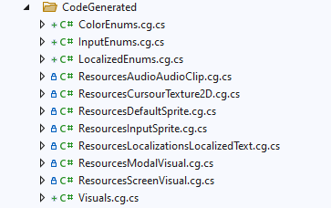
With Code Generator, developers can significantly speed up the process of creating and managing code, allowing them to focus on the more creative aspects of game development.
- Warning
- ⚠️ Usually code generation serves to assist development and does not require outside intervention, so try not to change them yourself, because during subsequent generation they will return to the default "state".
Model
Model is a unified player data system that collects all session and player information in one place. It is a static class that stores data about the player and other objects, such as the state of scene transitions, making it an indispensable tool for managing game data. The main functions of Model include:
- Unified data system: Consolidates all session and player information, allowing access to data from any part of the game.
- Static class: Stores data in a static class, allowing easy access to information without having to create class instances.
- Scene transitions: Stores information about the state of objects and scene transitions, ensuring smooth gameplay.
- Save to disk: The model is saved to disk and loaded on application startup, allowing the player's progress to be saved and its state restored upon restart.
- Data validation: After loading, the model goes through a validation step, which ensures the integrity and correctness of the data, preventing possible errors during gameplay.
With Model you can efficiently manage player data and game state, ensuring a stable and continuous gameplay experience.
The player model is stored at Application.PersistentDataPath/UserData
Save System
Save System is a save system that is an advanced and convenient tool for quickly saving and loading your game data. All save files are stored in the .json format. This system is adapted and configured for efficient data management, allowing developers to focus on creating game content. The main features of Save System include:
- Quick save and load data: Simply add the save component to an object, and you can be sure that the data will be saved and loaded the next time the game is launched.
- Developer-friendly: Game designers can easily manage the save process without the need for deep technical knowledge. The save component can be simply added to game objects, which simplifies integration.
- Data validation: After loading, data is validated, which ensures its integrity and prevents possible errors during the game.
- Auto-save data: Simply set a timer after which all data will be saved.
With Save System, you can easily manage the saving of player progress, providing a reliable and efficient way to store data. This will allow players to continue playing where they left off, improving the overall gaming experience.
Player saves are stored at Application.PersistentDataPath/Saves/...
Hot to save?
It's very simple, inherit your data from the SaveGameBaseComponentData interface. Also you should have a manager class, inherit it from ISaveGameBaseComponent and subscribe to SaveComponentsManager, then specify what you will save and how to load the data, for example:
public class SavedDataClass : ISaveGameBaseComponent
{
public class Data : SaveGameBaseComponentData
{
public float SliderValue;
}
private readonly CustomSlider _slider;
[Zenject.Inject] protected SaveComponentsManager _saveComponentsManager;
public string ProgressMessage => "Example...";
public SavedDataClass(CustomSlider slider)
{
_slider = slider;
}
public void Init()
{
_saveComponentsManager.Add(this);
}
public SaveGameBaseComponentData CollectData()
{
var data = new Data();
data.SliderValue = _slider.value;
return data;
}
public void LoadData(SaveGameBaseComponentData savedData)
{
if (savedData is not Data data)
return;
_slider.SetValueWithoutNotify(data.SliderValue);
}
public void Destroy()
{
_saveComponentsManager.Remove(this);
}
}
After this, you can safely save and load data from the file. For a deeper understanding, study the examples.
A little advice - you should be in two states. The first is "clean" when you just started playing. The second is when you load saves.
Scene Loader
Scene Loader is a convenient interface for loading and transitioning between scenes in your game, which includes functions for handling events and managing the progress of scene transitions. This tool ensures a smooth and efficient loading process, which improves the overall gaming experience. The main features of Scene Loader include:
- User-friendly interface: Allows developers to easily manage scene loading and transitions, simplifying the integration process. Although this is not required.
- Event handling: Supports handling of events related to scene loading, which allows for various scenarios of interaction with the player during transitions.
- Loading progress: Includes functions for displaying loading progress, which informs players about the loading status and makes the process more transparent.
- Transition flexibility: Allows you to configure various types of transitions between scenes.
- Integration with other systems: Scene Loader can work in conjunction with other asset components, such as Model and Save System, ensuring data integrity during transitions.
- Asynchronous Loading Support: The ability to load scenes asynchronously avoids the game freezing during loading, ensuring a smooth gaming experience.
With Scene Loader, you can easily manage scene transitions, improving player interaction and creating a more dynamic gaming experience.
How to load?
Loading a scene is very simple, here is an example:
SceneLoader.Load(
SceneLoader.Scenes.Meta,
LoadSceneMode.Additive,
default,
OnSceneLoaded);
Visual View Model
Visual View Model (VVM)** is a simplified version of the MVC pattern designed to make it easier to work with data in games. This approach is based on the principle of closed data handling, where all data is processed in the View, stored in the Model, and visualized using Visual components. The main features of the Visual View Model include:
- Simplified architectural pattern: VVM offers a lighter and more accessible way to organize code compared to classic MVC, which makes it ideal for game developers.
- Data closedness: All data is processed in the View component, which allows you to separate the presentation logic from the business logic and improve the manageability of the code.
- Inheritance from the Visual component: All user interface (UI) elements must inherit from the Visual component, which ensures uniformity in handling events, such as the Update or Awake methods. This simplifies the management of events and interactions.
- Flexible usage: VVM is not a strict rule, but rather a recommendation. Developers can choose to use VVM or their own system, allowing them to tailor the architecture to the specific needs of the project.
- Developer-friendly: Thanks to the VVM structure, developers can integrate and test UI elements faster, which contributes to a more efficient development process.
- Support for reactive programming: VVM can be easily adapted to work with reactive data, allowing the UI to update in real time when the model state changes.
With Visual View Model, you will get a powerful tool for organizing code and managing the UI in your games, which will make the development process easier and more intuitive.
How to create VVM?
Let's start with the Visual. The Visual is MonoBehaviour:
public class BootVisual : Visual
{
private BootView _bootView;
protected override void Create(IView view)
{
_bootView = DiContainerRef.Container.Instantiate<BootView>(new object[] { this });
base.Create(_bootView);
}
}
The View itself is:
public class BootView : View<BootVisual>
{
public BootView(BootVisual visual) : base(visual) { }
public override void Setup()
{
base.Setup();
}
public override void Awake()
{
base.Awake();
}
public override void Update()
{
base.Update();
}
public override void Sleep()
{
base.Sleep();
}
}
Все методы, которые доступны для перегрузки вы найдете в:
public abstract class View<T> : IView<T> where T : Visual
Color Library
Color Library is a single place to store all the colors used in your project. This tool provides easy access to colors and simplifies their management, making development more efficient and organized. Key features of Color Library include:
- Centralized color storage: All project colors are stored in one place, making them easy to find and use in code.
- Unique codes for colors: Each color has its own unique code, making it easy to find and use in different parts of the project.
- Automatic code generation: The code for each color is generated automatically. After adding a new color, it is important to regenerate the resources so that it is available in the code.
- Ease of updating: To change a color in the game, just change it in one place. All references to this color will be automatically updated, which avoids errors and simplifies the editing process.
- Intuitive interface: A user-friendly interface allows developers to quickly find the colors they need and manage them without unnecessary effort.
With the Color Library you can effectively manage colors in your project, ensuring consistency and ease of work with the visual elements of the game. This greatly simplifies the development process and allows you to focus on the creative aspects of game development.
How to add?
Find the settings file at Resources/ColorLibraryData and add the following:
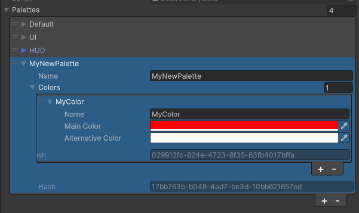
General rules:
- The palette name must be unique
- The names of colors within a palette must be unique within the palette
- ⚠️ After adding and setting a color, you must regenerate the resources so that the color becomes available in the editor and the game
- ⚠️ If you changed the name, then return to above point
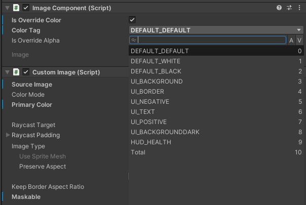
Mouse Manager
Mouse Manager is a simple and convenient tool for controlling the mouse cursor state in your game. It allows you to easily change the cursor state and icon when hovering over objects, which improves user interaction and makes the gameplay more intuitive. The main features of Mouse Manager include:
- Cursor state control: Allows you to change the cursor state depending on interaction with game objects, which helps players understand when they can interact with interface elements.
- Changing cursor icon: When hovering over objects, the cursor can change its icon, which visually signals to the player about available actions, such as selecting or interacting with the object.
- Ease of integration: The tool is easy to integrate into existing projects, allowing developers to quickly customize cursor control without the need for deep changes to the code.
- Event handling: Mouse Manager can handle hover and click events, which allows you to create more complex mechanics for interacting with game elements.
- Customization flexibility: Developers can customize different cursor states and their corresponding icons, which allows you to tailor the interface to the specific needs of the game.
With Mouse Manager you can improve the user interface of your game, providing a smoother and more intuitive interaction with players. This tool makes cursor control simple and efficient, which will positively impact the overall gaming experience.
Audio Manager
Audio Manager is a system for controlling the sounds in your game, providing management of all audio clips and their playback. This tool allows developers to easily integrate audio into gameplay and manage it with a high degree of flexibility. The main features of Audio Manager include:
- Storage of audio clip references: All audio clips are stored in one place, making them easy to use and manage.
- Automatic code generation: After adding a new audio clip, it is important to regenerate the resources so that it is available in the code. This avoids errors and ensures that all clips are correctly integrated into the project.
- Volume control: Audio Manager allows you to adjust the volume of sounds in the game, providing the ability to adjust the sound level for different situations.
- Channelization: Sounds are divided into several channels:
- Main channel: For the main sounds of the game. – UI channel: For user interface sounds. – Effects channel: For sound effects. – Music channel: For background music.
- Playing background music: Audio Manager can play a background music track, creating an atmosphere and improving the gaming experience.
- Managing the volume of individual tracks: Allows you to adjust the volume for each track separately, allowing you to create more subtle sound settings.
With Audio Manager, you can effectively manage the sound of your game, ensuring high-quality sound and convenience for players. This tool helps create an immersive audiovisual experience that greatly enriches the gaming process.
- Warning
- ⚠️ Important! In the future, I plan to switch to FMod because this will greatly simplify the development of the game.
Input Manager
Input Manager is a layer on top of the core Unity input system that provides easy access to all in-game events. This tool allows developers to easily manage keyboard and mouse input, as well as control player interactions with game objects. Key features of Input Manager include:
- Easy Event Access: Allows developers to easily handle input events, making it easier to create interactive gameplay.
- Input Disable: Ability to temporarily disable keyboard or mouse input during cutscenes or other important moments in the game, improving the user experience.
- Subscription-based: Input Manager works on the principle of subscribing to events, which allows for efficient management of input processing. Remember to unsubscribe from events to avoid memory leaks or unexpected application behavior.
- Key and Icon Storage: All keys and their corresponding icons are stored in the system, making it easy to manage control settings and allowing players to easily see available actions.
- Customizable: Developers can customize various input axes and actions, allowing them to tailor controls to specific game requirements.
With Input Manager, you can effectively manage input in your game, creating an intuitive interface for players and improving overall gameplay. This tool makes interaction with the game smoother and more responsive, which will positively impact the user experience.
How to subscribe?
[Zenject.Inject] private InputSystem _inputSystem;
_inputSystem.AddListener(InputKeyGenerated.InputEnums.JUMP, Jump);
_inputSystem.RemoveListener(InputKeyGenerated.InputEnums.JUMP, Jump);
If you change the keyCode of the button in the game settings, then all subscribers to this key will know about it and will use the new key instead of the old one.
Global Updater
Global Updater is a system that is responsible for updating all user interfaces (UI) in the game. It works in conjunction with Time Manager, ensuring that the interface state is synchronized with current game events. The main functions of Global Updater include:
- User Interface Updater: Allows automatic updating of all custom UI elements, ensuring that they are up-to-date and consistent with the current game state.
- Pause System Integration: Global Updater can pause or resume UI updates depending on the game state, avoiding unnecessary updates during pauses.
- Game Time Sync: The system manages updates according to game time, making the user experience smoother and more responsive.
- Customizable: Developers can easily customize which UI elements should be updated and how often.
With Global Updater you can effectively manage the state of your UI, ensuring it is up-to-date and improving player experience. This tool will be an essential element in creating a high-quality and responsive gaming experience.
How to subscribe?
public class AudioSystem : MonoBehaviour, IUpdateListiner
[Zenject.Inject] private GlobalUpdater _globalUpdater;
_globalUpdater.SubscribeUpdate(this,
new UpdateData(
false,
UpdateOrders.BeforeDefault));
_globalUpdater.SubscribeUpdate(this);
public void DoUpdate() { }
Time Manager
Time Manager is a utility designed to manage the timing mechanics of a game. It provides developers with tools to work with pauses, timers, and other timing aspects, allowing for more dynamic and interactive gameplay. Key features of Time Manager include:
- Pause System: Includes functions for pausing and resuming the game, allowing players to take breaks without losing progress.
- Timers and Delays: Developers can set timers for various game events, such as countdowns or delays before certain actions begin.
- Synchronization with other systems: Time Manager can work in conjunction with other asset components, such as Global Updater and Audio Manager, ensuring timing events are consistent.
- Customizable: Developers can customize timing parameters to suit the specific needs of the game, allowing for unique interaction mechanics.
With Time Manager you can effectively manage the time aspects of your game, creating a more engaging and interactive gaming experience. This tool will be an indispensable assistant for developers who want to create a high-quality and dynamic gaming experience.
Game Settings
Game Settings is a user-friendly interface for customizing game settings, allowing players to customize settings to suit their preferences. This tool provides flexibility and a personalized approach to gameplay, which improves the overall user experience. Key features of Game Settings include:
- Intuitive Interface: The user-friendly and intuitive interface allows players to easily find and change settings such as controls, graphics, and audio.
- Control Settings: Players can customize controls to suit their preferences, including remapping keys.
- Graphics Settings: Ability to change graphics settings such as resolution, texture quality, and effects. Supports: – Build-in Render Pipeline - default – Universal Render Pipeline (URP). – High Definition Render Pipeline (HDRP).
- Audio Settings: Players can adjust the volume of music, sound effects, and interface, creating a comfortable audio environment.
- Saving and loading settings: All changes are saved to disk and can be loaded the next time the game is launched, which allows players to avoid repeating the settings each time.
- Data validation: When changing settings, data validation occurs, which ensures the correctness of the entered values and prevents possible errors.
- Flexibility and extensibility: Developers can easily add new parameters and settings to the system, which allows them to adapt it to the specific needs of the project.
With Game Settings, you can give players the ability to customize the gameplay to their preferences, which will significantly increase their satisfaction and engagement. This tool will become an important element in creating a high-quality user experience.
Custom UI Elements
Custom UI Elements are a custom set of user interface elements such as buttons, toggles, and sliders that extend the functionality of the standard Unity elements. These elements are designed to improve player interaction and provide more flexible options for UI customization. Key features of Custom UI Elements include:
- Expanded functionality of standard elements: Custom elements offer additional capabilities compared to the default UI components, allowing you to create more complex and interactive interfaces.
- State Machine: Each element has a built-in state machine that manages various aspects such as color, position, and activity. This allows the appearance and behavior of elements to dynamically change depending on game events.
- Intuitive interaction: Elements are easy to customize and integrate into a project, allowing developers to quickly create intuitive interfaces.
- Event support: Custom elements can handle various interaction events such as clicks and hovers, making the interface more responsive and engaging for players.
- Customizable: Developers can easily modify or add new elements to the set, allowing them to tailor the interface to the specific needs of the game.
With Custom UI Elements, you can create a richer and more interactive user interface that will improve player interaction and enhance the overall quality of the gameplay. This tool will become an important part of your asset, allowing you to create unique and attractive interfaces.
All custom elements are available from the quick commands menu:
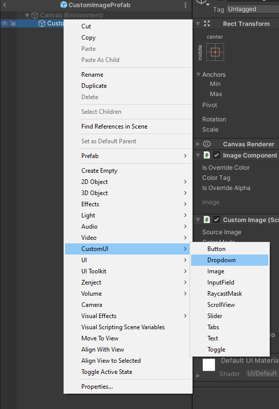
Custom Button
- Warning
- When you subscribe to events, do not forget to unsubscribe to avoid unwanted results of the program's work!
Button.EventClick += OnButtonClicked;
Button.EventClick -= OnButtonClicked;
Custom Dropdown
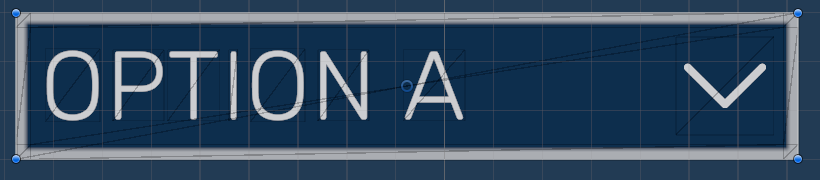
To create Custom Dropdown options, you must first create DropdownOptionData elements and add them to the list. Example of creating from 10 elements:
Sprite defaultIcon = ResourcesGenerated.LoadSpriteDefault(ResourcesGenerated.DefaultSprites.DefaultWIP);
List<DropdownOptionData> items = new List<DropdownOptionData>(10);
for (int i = 0; i < 10; i++)
items.Add(new DropdownOptionData($"Item {i}", defaultIcon, ColorLibrary.GetRandomColor().MainColor));
Dropdown.ClearOptions();
Dropdown.AddOptions(items);
Custom Image (RawImage) With Image Component
- Is Override Color - override the color of the image, now you can assign it a color from the library
- Color Tag - color tag in color library
- Is Overrride Alpha - ability to override alpha color channel
- Overrride Alpha - overridden color alpha channel value
Custom Input Field
The Custom Input Field works basically the same as the others, except for the state machine.
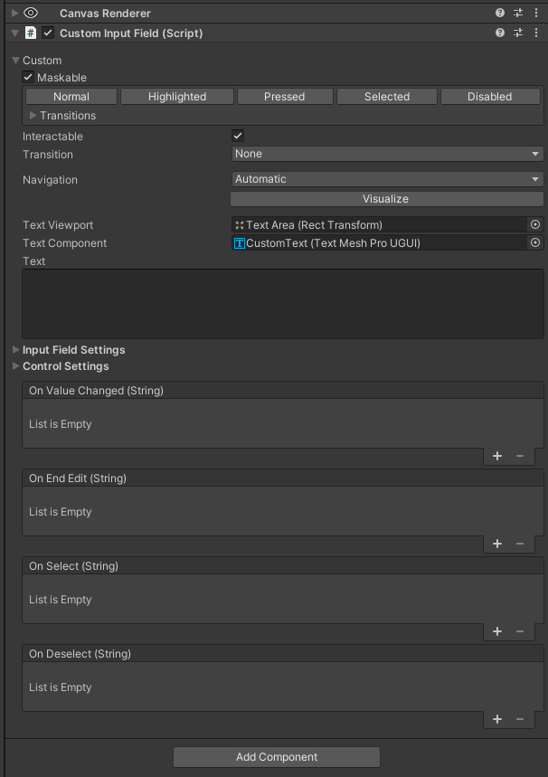
Custom Slider
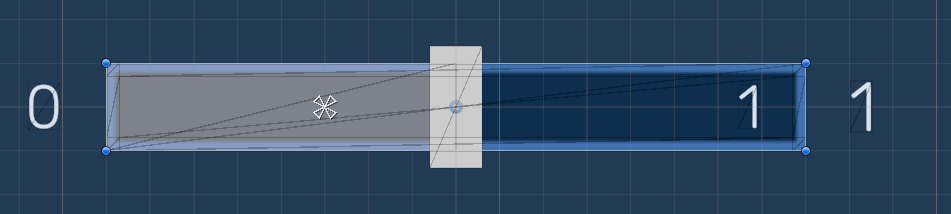
- Output Value Format - number of decimal places
- Value Localization Postfix - localization key of the text that will be displayed after the values in the slider
- Value Postfix - the text that will be displayed after the values in the slider
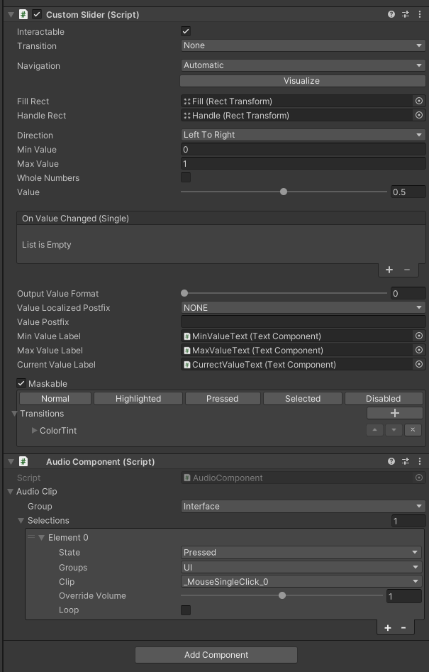
Custom Tabs
- States - state machine
- Reset Active Page On Enable - resets content to default state, for this one of Items must have IsActive option
- Items - bookmark content
Custom Text
- Localization Tag - localization key of the text. In order for the key to be included in the list, it is necessary to regenerate the resources! Leave the field as NONE, so as not to use the localization key. In this case, you will be able to assign the text in the TMPro component yourself.
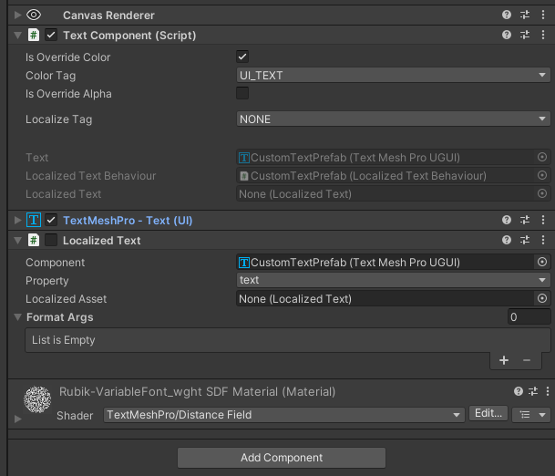
Custom Toggle
Custom Toggle works no differently from other similar elements, except for the presence of a state machine.
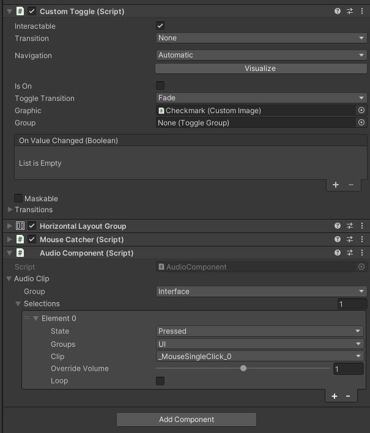
State Machine
Custom UI elements have their own state machine, here you can easily set a specific action for each state of the element, for example, take a dropdown list:
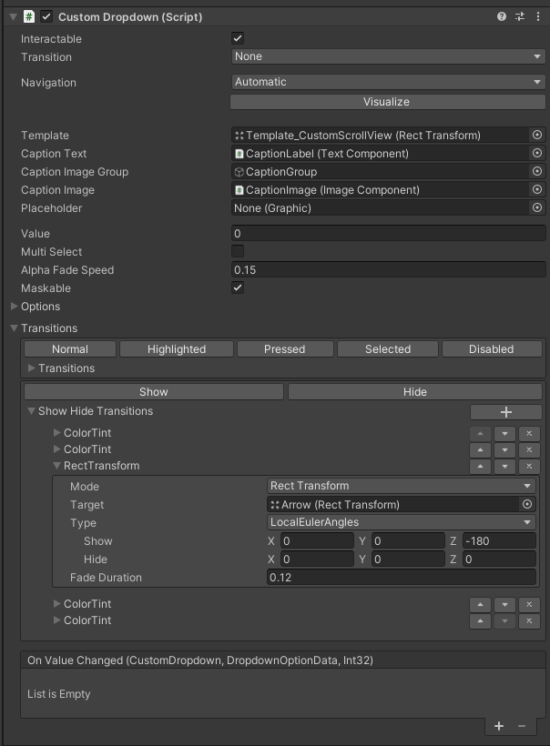
The dropdown list has several states: Transition works similarly to the Transition of a standard button, but with its own characteristics. ShowHideTransitions - final and initial state of the dropdown list
You can see the entire list of current states in the picture below. The list will be expanded in the future!
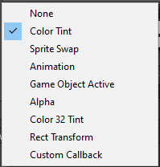
Also, each state has buttons for previewing it in the editor.
- Warning
- ⚠️ The editor will not play sounds or smooth transitions. All transitions will be instant!
Utils
Utils is a set of tools designed to make developers' work easier. These utilities help automate routine tasks, simplify the development process, and increase overall project efficiency. With Utils, you can optimize various aspects of development, allowing you to focus on more creative and complex tasks, improving the quality of your game product.
Localization
Localization - With Asset Localization you can easily localize your built-in Unity game assets. You can also create custom localizable asset functionality for your custom assets. You can load localization keys directly from configs. All localization keys are checked before loading. Convenient work with text localization in the editor via the drop-down menu.
How To Use?
In this section I will tell and show how to use C.O.R.E. and its aspects.
Dependencies
For correct operation C.O.R.E. uses the following plugins:
Examples
You can download and unzip the examples for C.O.R.E. to understand and learn how to work with the tool.
In order to respect all rights to third-party resources, I separated the examples from the main tool, leaving only basic examples.
Game Example
Example games that was written using C.O.R.E. can be found here Examples. Build id here Game Build
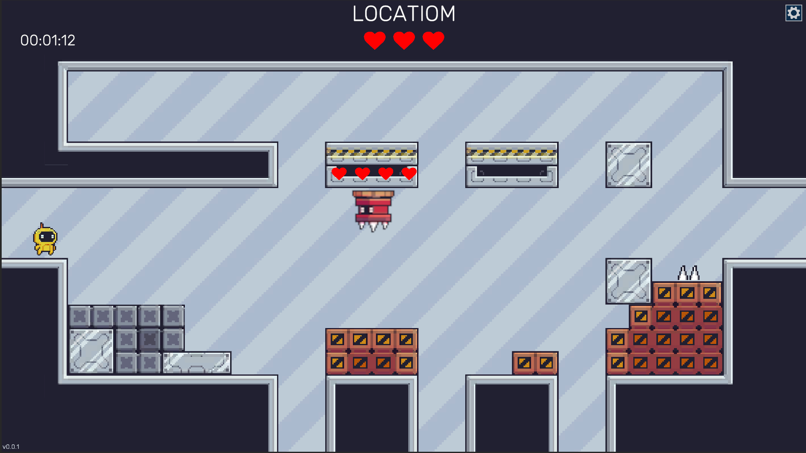
- Create an empty Unity project or make sure you have a clean version of C.O.R.E.. "Clean" means that you have not made any changes to the C.O.R.E. code, have not generated any assets, and have the latest version of the tool installed. 2. Download CORE Game Developers Toolkit Example.unitypackage and, using Unity/Assets/Import Packages/Custom Package, unzip it into a project with C.O.R.E. replacing all the suggested files.
- After the import is complete, open the C.O.R.E. game window (it is located at Windows/CORE/Game Window). In this window, find the Resources section and click the Generate button. Your project resources should be regenerated, and there should be no errors in the console.
- Open Build Settings and add scenes to Scene In Build so that Scene Loader works correctly. Then go to the Boot scene and run it. The scenes that need to be added are located along the path Assets/Example/Scenes. It is important to keep the numbering!
A little life hack - just select all the scenes and drag them into this window.
- Open the Boot scene and run the game
- Warning
- ⚠️ Important! Make sure you have the latest version of [C.O.R.E.](Chttps://assetstore.unity.com/packages/slug/311902 installed in your project and the latest version of the example downloaded!
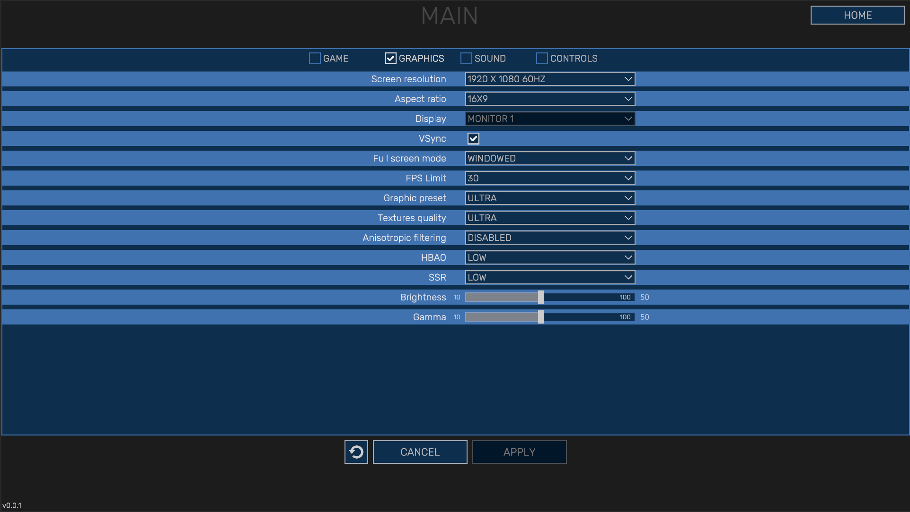
Try working with Asset Bundles
- Open the Game Window
- In the Asset Bundles section, make sure that you have the correct bundle export path set (example for the Windows platform - Assets/StreamingAssets/Bundles/StandaloneWindows)
- Click the Build button and wait for the bundles to finish building
- After building, you will have a StreamingAssets folder with the assembled bundles
- In the Game Window, enable the Load Bundles option - now all resources will be loaded from bundles
- Run the game and make sure everything works correctly
Game Mods for Example
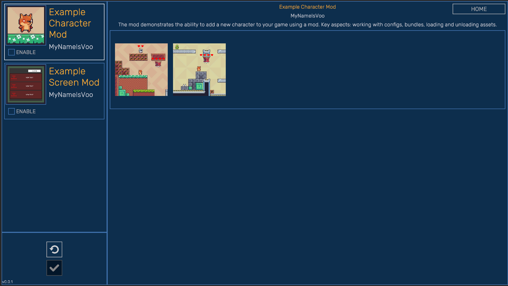
To add ready-made mods for the example described above, you need to do the following:
- Download the archive Mods.rar
- In the root with the Unity project, create a Mods folder next to the Assets folder, you should get something like this D:/UserPath.../ProjectName/Mods
- Unzip the mods into this folder and run the Boot scene. In the mods window, you should see the added mods.
Tower Defence Example
A new game example has been added - Tower Defense. You can download it here - Tower Defence Example.
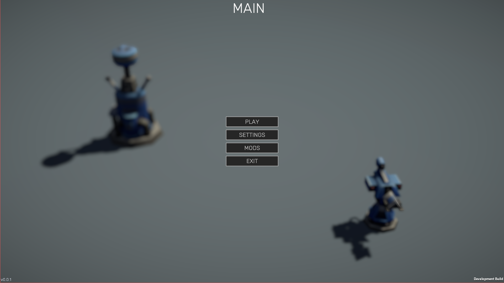
This example is based on an asset. Tower Defense Template from the Unity Technologies. Build is here Game Build

The installation and operation method is the same as in the example above. If you want to learn more about the template, read the documentation here Unity TD Docs link.
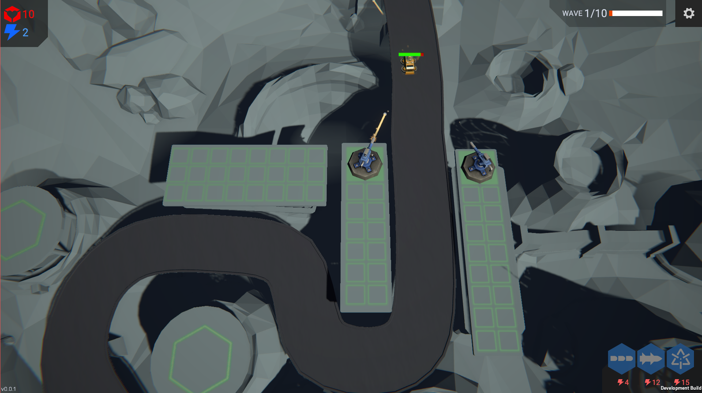
For this example, one mod is available - a new level! The principle of adding mods is the same as above - you provide all the necessary functionality for modders so that they can make mods for your game.
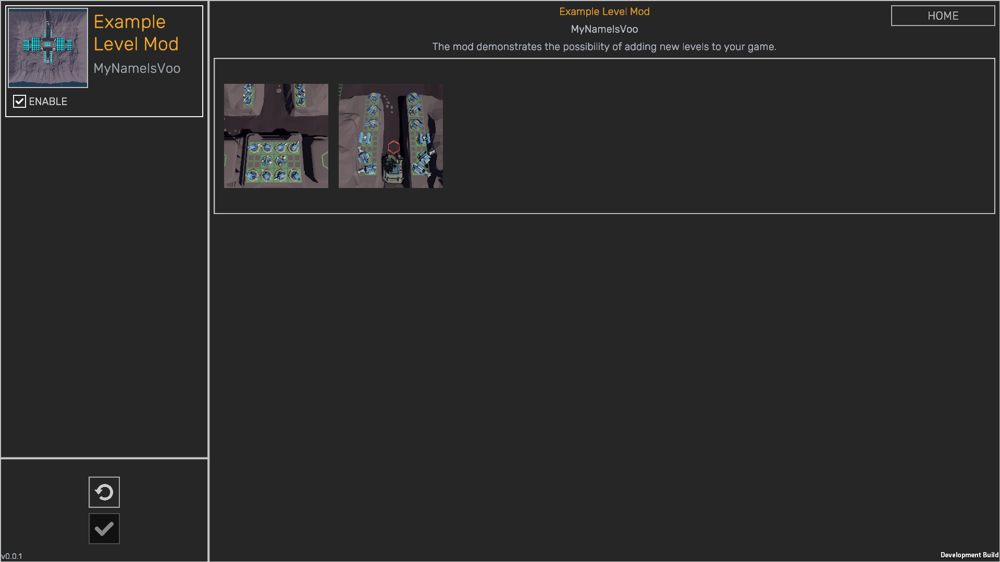
Build Project
Go to the project build settings and set the following options:
- Scripting Backend - Mono
- Api Compatibility Level - .NET Standard 2.1 or higher
- Managed Stripping Level - Disabled
Compatibility

 Compatible with the following versions of Unity:
Compatible with the following versions of Unity:
- Unity 2022.3.7f1 or higher - full compatibility
- Unity 6000.0.22f1 - partial editor compatibility. In some cases, there are conflicts between the C.O.R.E. editor and the Unity 6 editor. Does not affect the final product in any way.
Render-pipelines:
- Warning
- If you are using URP or HDRP you need to add the following to Shared_AD.asmdef
Unity.RenderPipeline.Universal.Runtime
Path:
Assets/
└── COREToolkit/
└── Scripts/
└── Shared/Game_Shared_AD.asmdef
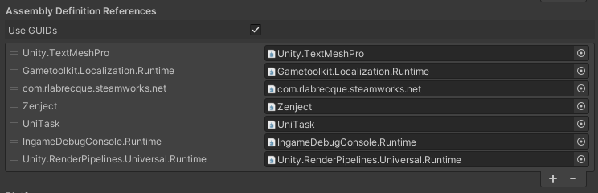
Platform
At the moment, only one platform is fully supported: 
In plan: 


Tutorials TODO
ToDo
- WebGL Suppors
States for all components- More Examples (
Tower Defence, FPS, ...)
- Video Tutorials
Contacts


E-mail: choco.nosp@m..16m.nosp@m.ail@m.nosp@m.ail..nosp@m.ru My other ASSETS
Bug-reports
If you find a bug or have any suggestions for improvement, please let us know: choco.nosp@m..16m.nosp@m.ail@m.nosp@m.ail..nosp@m.ru
Refund policy
If you’re uncertain about any asset’s workings or have questions before purchasing, please do not hesitate to reach out. We will do our best to answer your questions. Please read this before purchase to avoid any unwelcome surprises.
This policy attempts to clarify the asset store EULA‘s legal jargon and specifies the practical cases that it does, or does not cover. It does not add refund conditions that aren’t already covered by it.
All Asset Store sales are final as per the EULA section 2.2.9, which is agreed upon at checkout. Digital purchases cannot be returned once downloaded, hence it’s required to agree to waive the right to a refund. Clicking the “Download” button finalizes this agreement.
This is because it is impossible to ensure the package files are deleted after a refund is issued. Keeping both the package and its monetary value is not a fair trade. Therefore, some conditions must be met in order to avoid abuse or supporting impulsive purchases: Conditions that justify a refund:
- You have not yet downloaded the asset (verified through invoice number).
- Accidental purchase, or on wrong account (only valid if not yet downloaded).
- The asset was removed from the store within 4 weeks of purchasing.
- The asset fails to work as advertised, or there is a vital incompatibility with existing systems (within the confines of the supported platforms, capabilities, and versions). And cannot be resolved in a future update or a hotfix.
Requests are declined if:
- The invoice date exceeds 14 days prior to the request.
- You appear to not have read, misread or misunderstood the store page description (“as advertised”), or otherwise failed to inform yourself through the linked online documentation. This includes details such as:
- Minimum/maximum compatible or supported Unity versions
- Compatible or supported platforms
- Scriptable Render Pipeline compatibility (including the built-in RP)
- Listed features and limitations
- The asset is claimed to no longer be used.
- The package in question went on sale, or an upgrade discount was introduced, shortly after a full-price purchase was made.
If you find you are in accordance with these conditions, please get in touch on the basis of your request.
Updates
v1.0.42
- Added new example - Tower Defense. Read more in the Documentation
- Added ReadonlyAttribute to make the field in the editor inspector non-editable. Editing will be available in Debug mode
- CodeGenerator revision for cases when there is only one instruction in Regex
- CodeGenerator added generation of methods for obtaining a link to a prefab
- Added time taking into account pauses GameTime.Time
- CodeGenerator revision of Regex, added the ability to add a third instruction
- Added a switch in AudioSystem, to switch to random music mode
- Fixed a bug of state inversion in the boolean StateMachine
- Added a link to AudioListiner in AudioSystem for control
- Added several comments in the code
- Added CanvasGroup transition in StateMachine
- Added a new extension for Dictionary.IsNotEmpty
- Added a PauseDependent override for View, now you can specify whether View will be tied to a pause or not (by default it depends on the pause)
- Added a new constructor with TimeSpan to the Timer
- Fixed a bug when the timer (its progress) was not reset if you assign it a new Data
- SerializableVector2 conversion to Vector3Int added
- CodeGeneratorHelper fixes for code generation
- EnumData added Value, which returns a true value (Enum priority)
- ConverterListConfigReference for List<Config> added
- Disabled loading of the level by pressing the button (to enable, check the box in SaveSystem). Works only in the editor
- Fixed a bug with StateMachine, when the state was not applied
v1.0.21
- Fixed a bug when it was impossible to reassign the alpha value of a color in TextComponent
- ColorLibrary - added the HasColor(ColorCustomGenerated.ColorEnums colorEnum) method, which checks the presence of a color in the library
- ColorCustom - added 3 new constructors
- Added the functionality of restarting the application to enable or disable mods at the request of the mod (the parameter responsible for this is RequiredReboot) See the example for more details
- Fixed the generated files when creating a mod
Mods AudioClips
- Mods - added the ability to load audio clips
- Added a new extension method for TryFirstOrDefault Lists<T>
- AudioLibrary added two methods InsertAudioClips and RemoveAudioClips
- AudioClipData structure changed, now Clip is EnumData<ResourcesGenerated.AudioClips>
- Mod - added GetAudioClip method, which loads AudioClip from bundles and returns it in the request
- Mod - added GetAudioClips loads all audio clips from bundles and returns them in the request
v1.0.12
- Fixed the error of inability to build bundles due to missing Mono.Cecil libraries
v1.0.11
- Added a state machine for any object
- Added an example of using the state machine
- Added the StateMachineVisual component (quick action - CustomUI/Components/State)
- All prefabs in the menu were moved to a separate subfolder - CustomUI/Prefabs/...
- Added a new method in Transitions: public void SetState(int index, bool instant) { ... }
- Fixed the bug ObjectDisposedException: SerializedProperty _transitions.Array.data[2] has disappeared!, when deleting a state in the state machine
- Fixed a bug when Custom UI prefabs were not created via the context menu
- Added an example of using Custom Table
- Added an object pool for Custom Table
v1.0.1
v1.0.0